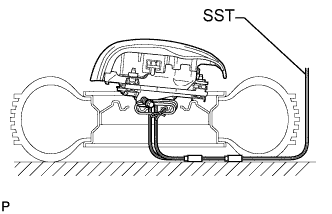

НАКЛАДКА РУЛЕВОГО КОЛЕСА > СНЯТИЕ С ЭКСПЛУАТАЦИИ |
| 1. МЕРЫ ПРЕДОСТОРОЖНОСТИ |
| 2. УТИЛИЗАЦИЯ НАКЛАДКИ РУЛЕВОГО КОЛЕСА (ЕСЛИ ОНА УСТАНОВЛЕНА В АВТОМОБИЛЕ). |
Проверьте работоспособность SST (Нажмите здесь).
Изучите меры предосторожности (Нажмите здесь).
Отсоедините провод от отрицательного (-) вывода аккумуляторной батареи.
Для моделей с наклонной телескопической рулевой колонкой с ручным приводом:
Снимите нижний кожух рулевой колонки (Нажмите здесь).
Для моделей с наклонной телескопической рулевой колонкой с электроприводом:
Снимите нижний кожух рулевой колонки (Нажмите здесь).
Установите SST.
Отсоедините разъем подушки безопасности (желтый) от витого кабеля с датчиком положения рулевого колеса.
Подсоедините разъем SST к разъему подушки безопасности витого кабеля с датчиком положения рулевого колеса.
 |
Отодвиньте SST на расстояние не менее 10 м (32,8 фута) от переднего бокового стекла автомобиля.
| *1 | Аккумуляторная батарея |
| *a | 10 м или более |
Жгут проводов SST должен обеспечивать достаточное расстояние до переднего бокового окна. Закройте все двери и окна автомобиля.
Подсоедините красный зажим SST к положительному (+) выводу аккумуляторной батареи, а черный – к отрицательному (-) выводу.
Разверните подушку безопасности.
Никто не должен находиться внутри автомобиля и на расстоянии до 10 м (32,8 фута) от него.
Нажмите на активационный выключатель SST и разверните подушку безопасности.
| 3. УТИЛИЗАЦИЯ НАКЛАДКИ РУЛЕВОГО КОЛЕСА (ЕСЛИ ОНА НЕ УСТАНОВЛЕНА В АВТОМОБИЛЕ). |
Проверьте работоспособность SST (Нажмите здесь).
Снимите накладку рулевого колеса (Нажмите здесь).
 |
С помощью запасного жгута проводов для автомобиля привяжите накладку рулевого колеса к дисковому колесу.
| *a | Диаметр жгута проводов |
| *b | Поперечное сечение жгута проводов без изоляции |
Вставьте 2 болта с шайбами в отверстия под болты в накладке рулевого колеса.
После подсоединения проводов к SST, подсоедините их к накладке рулевого колеса.
Обмотайте 3 жгута проводов не менее 2 раз вокруг болтов, установленных с левой и правой сторон от накладки рулевого колеса.
| *a | не менее 2 раз |
Уложите накладку рулевого колеса так, чтобы сторона, в направлении которой происходит развертывание подушки безопасности, была обращена вверх. Отдельно привяжите накладку рулевого колеса с левой и правой сторон к дисковому колесу через отверстия в диске для гаек ступицы. Расположите разъем SST так, чтобы он свисал из отверстия для ступицы в колесном диске.
|  |
Установите SST.
Подсоедините разъем SST.
 |
Переместите SST на расстояние не менее 10 м (32,8 фута) от накладки рулевого колеса, привязанной к колесному диску.
| *1 | Аккумуляторная батарея |
| *a | 10 м или более |
Накройте накладку рулевого колеса картонной коробкой или шинами.
| *a | Груз |
Способ укрытия картонной коробкой: Накройте накладку рулевого колеса картонной коробкой и прижмите ее в четырех местах 4 грузами общим весом не менее 190 Н (19 кг, 41,8 фунта).
 |
Способ укрытия шинами: Положите, как минимум, 3 шины без дисковых колес поверх шины с дисковым колесом, к которому привязана накладка рулевого колеса. Положите на них другое колесо с диском.
| *1 | Шины (3 или более) |
| *a | Внутренний диаметр |
| *b | Ширина |
Свяжите шины между собой с помощью двух жгутов проводов.
Разверните подушку безопасности.
| *A | При использовании картонной коробки |
| *B | При использовании шин |
| *1 | Накладка рулевого колеса |
| *2 | Аккумуляторная батарея |
| *a | 10 м или более |
Подсоедините красный зажим SST к положительному (+) выводу аккумуляторной батареи, а черный – к отрицательному выводу (-).
Никто не должен находиться ближе 10 м (32,8 фута) к колесному диску, к которому привязана накладка рулевого колеса.
Нажмите на активационный выключатель SST и разверните подушку безопасности.
 |
Отправьте на утилизацию накладку рулевого колеса.
Снимите накладку рулевого колеса с колесного диска.
Уложите накладку рулевого колеса в полиэтиленовый пакет, плотно завяжите его и утилизируйте так же, как и другие обычные детали.